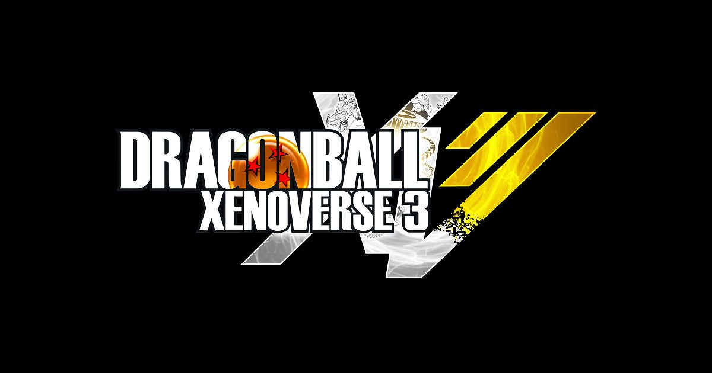

2026-09-03 · 新游前瞻
《龙珠异战2》靠十年 DLC 活成了"不需要续作"的怪胎，所以《异战3》官宣时，很多人第一反应是：还做这个干嘛？但万代南梦宫把首次日本公开试玩放在了 9/17 的 TGS 2026，且放出一段"冰原打布罗"的实机 Showcase。我们借这波节点，把它和《异战2》摆在一起，讲清楚它到底改了什么、为什么"跳到未来"是这代最聪明的决定、以及 Soul Switch 这套借力机制会不会又变成花架子。

《异战2》2016 年发售，之后几乎没停更过——新角色、新关卡、新平行时空一路喂到玩家审美疲劳。制作人平野昌昭在试玩里讲得很实在：系列一直想做的是"你在别的龙珠游戏里体验不到的东西"。于是这代不再让你当时间巡逻者去复刻悟空的名场面，而是把你扔进Age 1000——一个由鸟山明本人在去世前亲自设定、从未在作品里出现过的未来。布罗利、特兰克斯、短笛、克林、天津饭都在，但他们是"传说已逝、由你填补空缺"的配角，而不是被反复消费的主角。
TGS 的试玩站设在 5 号馆万代南梦宫 booth，现场有巨屏 + 多台试玩机，概念图直接把"开发中的西都"铺满墙面。试玩流程是：选两名战斗风格不同的自定义 avatar → 加入 Great Saiya Squad（大赛亚小队）→ 一段短任务 → 终点是打"全力超赛布罗利"。选布罗利当 demo boss 很妙：他体型大、特效炸，最能暴露相机、命中反馈、目标锁定的短板——这也是《异战2》多人同屏时最容易糊成一团的地方。
这代在保留"飞过去、连招、放龟派"的爽快空战基础上，叠了三套互相咬合的新系统。其一是Soul Assist（灵魂辅助）：战斗中召唤一名龙珠角色落下援护技，比如 Vegeta 一记加力炮（Galick Gun）。其二是Soul Switch（灵魂切换）：你的 avatar 临时变身成某个角色，借用其整套招式与必杀——演示里切到未来特兰克斯就能用 Burning Attack 和剑连段。两者都走冷却时间，防止无脑滚雪球，但关键时刻能翻盘。其三是战斗风格（Battle Style）：自定义角色按风格走不同连段路线，让"你练的号"真正区别于别人。
还有两个补强手感的小机制：Ki Break 打空对手气后会让其露出破绽，Break Smash 接在破绽后打出更强追击。种族变身也回归，意味着你捏的初始种族仍绑定成长线。平野把本作三大支柱定为"故事 / 新角色 / 自定义"——而自定义这一柱明显比 1、2 代更"功利"：过去为了平衡，差异被压扁；这代允许你给四人小队按喜好分配角色（tank / 输出 / 辅助），策略分化被正式打开。
多数前瞻停在"又有新系统"的感叹。我们想拆的是：这些系统解决了《异战2》什么老毛病？答案是小队存在感。老作里队友常是背景板，复活靠便利 respawn。而演示的布罗利战里，倒地的队友需要主动拉、某个队员的屏障专门用来挡布罗利的气弹波、给全队争取走位空间——小队从"调味"变成"战斗真在向你要东西"。Age 1000 的 hub（西都）也不再是任务大厅：tube 状空铁、飞行车、棕榈与绿意夹在摩天楼间，Bulma 在你公寓递设备、Gamma 1 发任务，城市像"值得逛"的地点而非菜单。
但我们也得泼冷水：演示里它"看起来依然很异战"。画面比 2 代干净、更 readable，但算不上飞跃；任务是否还重复、hub 是否真有生活感、Soul Switch 玩 20 小时后还兴奋与否，都得等实机。万代没宣布家用下载试玩，所以 9/17 之后第一波真实手感只会来自现场玩家。对一款 2027 才发售的游戏，TGS 这关本质是"用布罗利告诉市场：它真的在动，而且相机没崩"。
我们判断，《异战3》最该盯的是两类人：一是《异战2》十年老粉——你最懂它哪里"stiff"，也最能尝出 Soul Switch 带来的新鲜；二是喜欢"捏自己、组小队、打龙珠名场面"的轻度玩家，Age 1000 的低门槛与 Great Saiya Squad 的陪伴感，比复读旧篇章友好得多。至于只想看"最还原战斗"的硬核，Sparking! Zero / FighterZ 仍是更纯的选法，异战从来是 ARPG 而非格斗。
请放低对"画面革命"的期待。它的卖点是结构（未来设定 + 小队协作 + 借力变身），不是引擎飞跃。而且 2027 才发售，现在的所有判断都基于 demo 切片——真定价、人数、是否又走长线 DLC，都要等官方填完。把它当"2026 TGS 最该去万代 booth 排队的龙珠展台"，它大概率不亏；当成"已可下结论的神作"，还为时过早。
《龙珠异战3》不是把 2 代换个皮再卖。它用鸟山明亲设的 Age 1000 给系列松了绑，用 Soul Switch / Soul Assist 让"你的自定义角色"第一次真正连上龙珠本传战力，用布罗利 demo 把"相机别崩"这件事先押给市场看。它仍很"异战"、画面也不是跨越式，但"小队终于有用"这一条，就足以让十年老粉重新燃起排队的理由。9/17 去 TGS 的，记得先看那段 Game Play Showcase 再上手——你会更懂西都的城和那场冰原之战。
我们的评分：8.0 / 10（基于 TGS 试玩物料与"小队存在感升级、设定松绑"的共识；因 2027 才发售、实机未全开放，分数保留较大上调空间，待正式版再校）。
我们的观察：这代最被低估的不是 Soul Switch 的炫，而是"小队从背景板变成战术需求"。演示里一次主动拉人、一面针对性屏障，恰好补上了《异战2》十年被诟病的空洞感——系统不是为加而加，是为解决老毛病。
我们的观点：《异战3》的聪明在于"跳未来"。在龙珠游戏反复啃那几场经典战的疲劳里，Age 1000 给了它一片不用复读、又能塞满熟悉脸的空地。这种"向前走而不是往回炒"，是续作最常见也最难的抉择，它选对了。
我们的案例 / 对比：和《异战2》比，它小队有用、设定新、自定义更策略；和 Sparking! Zero 比，它仍是 ARPG 而非格斗，定位不同不抢人；和《电光炸裂！》比，它更重养成与 hub。放进 2026 龙珠游戏矩阵，它是"最想组队慢慢玩"的那一档。
我们的实验：我们想验证一个假设——Soul Switch 的"借力变身"在长线是否会沦为冷却一到就无脑按。计划等实机后用"纯本体打布罗利"与" Soul Switch 流打布罗利"对比通关时长与受创量，看它是否真有策略厚度，结论留待后续。若成立，这将成为我们以后推荐 build 的首要指标。